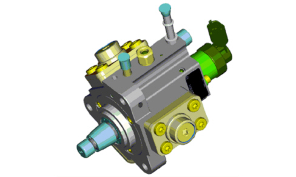
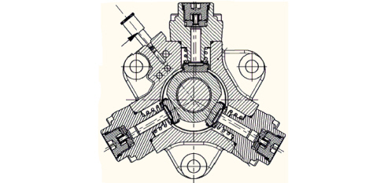

INTRODUCTION - DIESEL PRESSURE PUMP AND CONTROL
- Path
- Descriptions > 10 ENGINE > 1060 DIESEL INJECTION SYSTEM > 1060E DIESEL PRESSURE PUMP AND CONTROL > INTRODUCTION - DIESEL PRESSURE PUMP AND CONTROL
- Kind
- system description
- Applies to
- engines: 1.9 JTD 8v, 1.9 JTD 16v, 2.4 JTD 20v; all production periods
- Interactive page
- https://sloeber94.github.io/elrnDB-fCrm/en/#/194002263
Applies to: engines: 1.9 JTD 8v, 1.9 JTD 16v, 2.4 JTD 20v; all production periods
PRESSURE PUMP
Specifications
Type
The pump is radialjet type with three radial pistons (total cylinder capacity 0.697 cc) and is driven by a toothed belt without the need to adjust timing.

Structure
Because the pressure pump must be fed at a pressure of at least 3.5 bar, the fuel system is equipped with an auxiliary fuel pump submerged in the tank.
The maximum delivery pressure reaches 1600 bar.
The pressure pump is lubricated and cooled by the fuel via special channels.

The movement of the pistons is determined by the rotation of a triangular shaped cam on the pump shaft. This cam causes the movement of the three pistons in succession through the movement of a mechanical interface (tappet) between the cam and the foot of the piston. The contact between the cam and each individual tappet is ensured by means of a spring.
Each pumping unit is equipped with an intake valve and a supply ball valve. All the three supplies for the pumping elements are joined inside the pump and send the fuel to the shared manifold by means of a single duct.
There is a low pressure regulator solenoid valve on the pump to adjust the supply pressure at the pump intake in order to only compress the diesel fuel needed to reach the pressure mapped in the control unit
PRESSURE REGULATOR
Specifications
Structure
This is fitted on the pressure pump and controlled by the injection control unit. It adjusts fuel feed pressure to the injectors.
The pressure regulator consists mainly of the following components:
- a spherical shutter (1);
- a valve (3) controlling pin (2);
- a preloading spring (4);
- a coil (5).

1. Spherical plunger
2. Pin
3. Valve
4. Preload spring
5. Coil
6. Case
7. Anchor